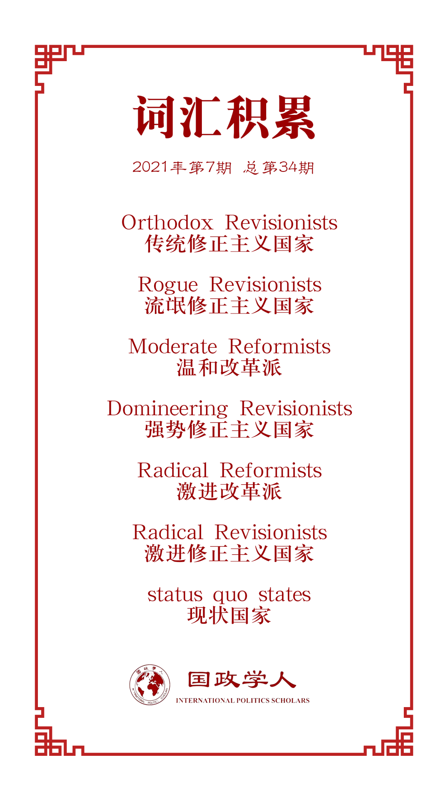

收录于合集 #理论研究 96个

作品简介
【作者】 Andrej Krickovic，俄罗斯国立高等经济大学世界经济和国际事务学院助理教授。
【编译】 李思（国政学人编译员，韩国首尔国立大学国际区域学硕士）
答案选项组答案选项）
【审核】 李博轩
【校对】 钱靓
【排版】 林祉欣
【美编】 方引弓
【来源】 Krickovic, A. Revisionism revisited: developing a typology for classifying Russia and other revisionist powers. Int Polit (2021). https://doi.org/10.1057/s41311-021-00322-3
【归档】 《国际关系前沿》2021年第7期，总第34期
期刊简介
《国际政治》（ International Politics ）是一本开创性的同行评议期刊，致力于探讨跨国问题和全球问题。该期刊不支持具体的政治或方法论立场，欢迎发表能展示研究结果并引发更深层次对话的文章。该期刊旨在为来自各个学科的新兴学者提供一个全球论坛。
重新认识修正主义：一种归类俄罗斯和其他修正主义国家的类型学
Revisionism revisited: developing a typology for classifying Russia and other revisionist powers
Andrej Krickovic
内容提要
在国际关系领域中，关于修正主义存在很多争论和模糊的概念。本文的研究给出了一种更准确和详细的分类方法，有助于克服这些问题。本文的分类方法根据修正主义国家的目标以及它们为实现这些目标所愿意使用的手段来将不同的修正主义国家归类。关于对俄罗斯等修正主义国家的分析，以及对于中国是现状国家还是修正主义国家这一争论，本文的分类方法可以作为参考以便给出更详尽的判断，避免错误的比较和偏见，也对于国际关系理论中概念的漏洞有所补充。
文章导读
修正主义是一个在国际关系领域中频繁被提到的概念，并且通常被用来描述一些非西方国家的行为。然而国际关系领域未能形成一个一致和连贯的概念。对于最基础的一些问题未能达成共识，例如：修正主义的构成是什么，是什么导致某一个国家成为修正主义以及如何鉴定修正主义国家。本文定义的修正主义分类是研究出一种国家间基于修正主义目的的性质上的区别。首先，该分类考虑该修正主义国家实现目标所采用的手段。其次，还深入研究这些国家所追求的权力分配上和规范上的变化的准确性质，以及该变化与现状的差距。因此，该分类将激进的修正主义国家分为两类：革命型修正主义国家（Revolutionary Revisionists）和保守型修正主义国家（Reactionary Revisionists）。革命型修正主义国家的目的是推翻现有的秩序规范，而保守型修正主义国家着重于保留现状并倾向于将已经发生的变化恢复现状。本文认为，根据这一新的修正主义分类方法，俄罗斯是一个保守型的修正主义国家。俄罗斯反对现有的国际秩序，并且寻求关于现有规则和规范的变化。俄罗斯既不想取代美国的霸权地位，也不想改变现有的游戏规则用自己的规则取而代之。俄罗斯的保守型修正主义表现在反对国际关系的逐渐变化并且持续地努力维护现状中的一些传统元素（主权和不干预大国事务），以及试图扭转一些国际社会上已经发生的变化。
正文
为了弥补国际关系领域对于修正主义现有定义的漏洞，需要一种修正主义的新分类来同时考虑到修正主义国家的方式和目标，以及修正主义国家想要的权力分配和规范上的变化类型。修正主义国家有三种基本的目标：改变权力和地位的层级；改变规范秩序；或者两者都试图改变。 与现有概念不同的是，本文提出的修正主义新分类不仅根据国家的目标来判定一个国家是否为修正主义，而且还将实现目标的手段列入考虑内。 例如，某些国家将改变现状列入政策内，但却想在现有的秩序规范内实现这种改变。并且，这一新分类方法采用了多维度的方式，既考虑修正主义国家目标的性质，也考虑到他们实现目标所采用的手段，避免了以往概念中的单一维度的分析。
另外，以往的研究中将武力（military force）看作一个国家修正主义的主要体现。与现有概念不同的是，本文的新分类方法将重点放在一个国家对破坏现有秩序中的规则、规范和组织的意愿，并将其作为判断一个国家是否在采取修正主义方式的标志。这样可以帮助我们分辨哪些国家是在现有国际秩序内寻求变化，哪些国家是想通过破坏规范和规则来实现目标。武力依然是一个重要标志，但只有在当一个国家在不遵照现有规范秩序的情况下诉诸武力时才是如此。
根据目标和方式，本文进一步将修正主义国家进行分类。 本文将那些在现有规范秩序下实现权力分配上或地位上的目标的国家定义为“传统修正主义国家”（Orthodox Revisionists）。 传统修正主义国家一般是那些想在现有的规则、秩序和组织中提高力量和地位的大国，例如，俾斯麦时期的德国和入侵中国前的日本（1931年前的日本帝国）。 而那些想要通过打破规则来实现目标的国家被定义为“流氓修正主义国家”（Rogue Revisionists），朝鲜就是其中一个例子。 想要改变秩序规范，但却接受现有的权力、权威和地位层级的国家可以分为另外两类。 第一类是那些反对并且想要改变规范秩序，但仅在现有的规则或组织内寻求改革的国家被称为“温和改革派”（Moderate Reformists），比如欧盟国家。而那些想要改变现有规则秩序并且愿意打破规则的被称为“强势修正主义国家”（Domineering Revisionists）。 这类国家要么想要按照他们的意愿重塑世界，如19世纪的英国和冷战后的美国，要么是一些想要改变规则和规范以保住他们的霸权地位的衰落中的霸权国家。特朗普执政时期的美国符合这一类型的特征。另外， 那些想要改变地位、权力分配和规范的秩序，但想通过现有秩序下的规则和机构来实现的国家被分类为“激进改革派”（Radical Reformists） ，冷战时期不结盟运动的成员国以及七十七国集团就属于这一类。最后， 想要通过破坏现有秩序规则和机构来实现改变的目的的国家被划分为“激进修正主义国家”（Radical Revisionists） ，这类国家被进一步分为革命型（如纳粹德国和苏联）和保守型修正主义国家（如尼古拉斯一世下的俄罗斯）。保守型修正主义国家更想保存一些现有社会秩序的元素，而且比前者更容易适应和妥协。
另外， 一些想要保留现有的国际权力和特权层级，不寻求规范秩序变化，遵守并支持现有秩序的国家被称为“现状国家”（status quo states） ，比如，20世纪的英国、冷战时期的美国和如今的日本。关于当代中国是一个现状国家还是修正主义国家一直存在着争论。本文的分类视改革中的中国为一个修正主义国家，并且正在从传统修正主义向激进修正主义转型中。中国没有接受全部由西方提出的自由规范和价值观。中国作为一个“负责任的大国”遵守着现有规范秩序，然而由于其规模之大，中国的经济崛起已经在相当程度上改变了全球权力和地位的层级。由于其力量的崛起，中国已经开始寻求更多的规则和规范变化（如亚洲基础设施投资银行和“一带一路”倡议）。 然而，现在的中国依然在现有的秩序内通过改革的方式寻求变化，而没有直接地挑战整个秩序，因此，如今的中国可以更准确地被归为“激进改革派”。
**
**
本文对俄罗斯的修正主义给出了分析和定义。 根据本文的分类方法，俄罗斯可以归为一个保守型修正主义国家，因为俄罗斯有意图想要改变现有的国际层级和规范秩序，并且想要通过打破规则来实现目标。 俄罗斯既不是一个想要完全颠覆现有秩序的革命型修正主义国家，也不是一个保守的现状国家。本文认为俄罗斯的修正主义倾向与其在国际社会中衰落的地位有关。俄罗斯的领导者认为，作为一个衰落中的大国，俄罗斯既没有足够的物质能力去颠覆处在现有国际层级顶端的国家，也没有力量去制定并加强自己的规则和规范。像俄罗斯一样的衰落大国更愿意回到基于过去秩序的规则和组织中，因为那些是在他们曾经强大的时候制定下来的，因此更符合他们的利益和倾向。
译者评述
基于现有的概念不足以提供一个清晰的标准去判断一个国家是否为修正主义国家，为了补充这一国际关系领域概念的漏洞，本文作者提出了一个新的分类方法。根据各国家想达到的目标以及手段将不同类型的修正主义国家分类，以避免概念的误用和错误的比较。译者认为，本文的分类方法提供了一种更细致的判定标准，但对于该如何区分不同类型的修正主义国家以较少的篇幅来论述。在对于俄罗斯的修正主义的分析中，作者提出了俄罗斯称为保守型修正主义国家的原因是由于其对于衰落的力量和地位的担忧和焦虑，以及俄罗斯领导者清楚地意识到自身力量不足以对抗美国。但译者认为，作者并没有提供足够的论据去详细地分析俄罗斯的国内政策和外交政策的定位以及在国际上的身份认知，因此对于俄罗斯想要达到的修正主义目标并不明确。另外，文中提出，在辨别不同类型修正主义国家中重要的一个标准是是否有意向挑战现有规范和秩序。但在国际社会中，不同国家往往对于其他国家的行为存在着偏差和误解。由于各国家有不同的大战略和国际利益，一些补充和完善现有国际秩序的行为可能被误认为是在挑战国际秩序，而一些基于自身利益破坏现有规范和组织的行为也可能被宣传为在维护国际秩序。所以译者认为，关于如何判断一个国家是否有意或者正在“打破规则”需要更多的讨论。
词汇整理

文章观点不代表本平台观点，本平台评译分享的文章均出于专业学习之用, 不以任何盈利为目的，内容主要呈现对原文的介绍，原文内容请通过各高校购买的数据库自行下载。
好好学习，天天“在看”
国政学人
支持学术公益与知识传播
微信扫一扫赞赏作者 __赞赏
已喜欢，对作者说句悄悄话
取消 __
发送给作者
发送
最多40字，当前共字
上一页 1/3 下一页
长按二维码向我转账
支持学术公益与知识传播
受苹果公司新规定影响，微信 iOS 版的赞赏功能被关闭，可通过二维码转账支持公众号。